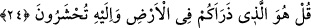

yüzlerine rahmet nazarıyla bakmak, muhsinlerin yaratılmışlara iltifatlarına; yakin
ashabının, şevk, zevk ve şefkat erbabının bakışlarına bakmak ve bunların dışında hayırlı
olan şeylere gözü çevirmek vardır.
Dil, şükür ve hamd içindir
Hakkı bilen kimse gıybet etmez
Kulak, Kur’ân ve nasîhat dinlemek içindir,
Bâtıl şeylere ve iftirâya kulak verme.
İki göz Allah’ın sanatlarını görmek içindir,
Kardeşinin ve dostunun ayıbına gözünü kapa.
Hayvanlar suskundur, insanlar konuşur,
Fakat lüzumsuz söz söyleyenler hayvanlardan da kötüdür.
İnsanoğlunu aklı ve konuşması belli eder,
Söz bilen papağan gibi nâdân olma.
Birisi hakkında kötü söz söylediğinde
Doğru söylemiş olsan bile sen kötü birisin.
Göz, ağız, kulak ne varsa hepsini sana verdi,
Eğer akıllıysan onun istemediğini dinleme.
Başını nimet verene şükürden çevirme ki
Kıyâmet günü âsîlerden olmayasın.
“Ef’ide” yâni kalplerin görevleri arasında ise Allah’ın celâli, kemali, cemali,
ihsanları üzerinde düşünmek; O’ndan korkup ümitlenmek, O’nu sevmek, O’nunla
buluşmaya özlem duymak, peygamberlerini ve velî kullarını sevmek, düşmanlarına buğz
etmek, meseleler ve deliller üzerinde düşünmek, âile efradının ihtiyaçlarına önem
vermek ve buna benzer başka faydalı şeyleri yapmaktır.
Kalbini cemâl nûruyla cilâla, parlat ki
Bütün kemâller sende hâsıl olsun.
24. De ki: Sizi yeryüzünde çoğaltıp yayan O’dur; ancak O’nun huzûruna gelip
toplanacaksınız.
Ey yaratıkların en mükemmeli, “De ki: Sizi yeryüzünde çoğaltıp yayan O’dur.” Yâni
yeryüzünde sizi yoktan var eden ve çoğaltan O’dur. Kamus’ta ifâde olunduğuna göre
“zerae” fiili tıpkı “ce’ale” fiili gibidir. Mânâsı ise “herhangi bir şeyi yarattı ve çoğalttı”
demektir. Zürriyet kelimesi bu kökten türemektedir. Ne bir başkasıyla ortak olarak ne de
başlı başına bağımsız biçimde hiç kimsenin değil “ancak O’nun huzûruna gelip